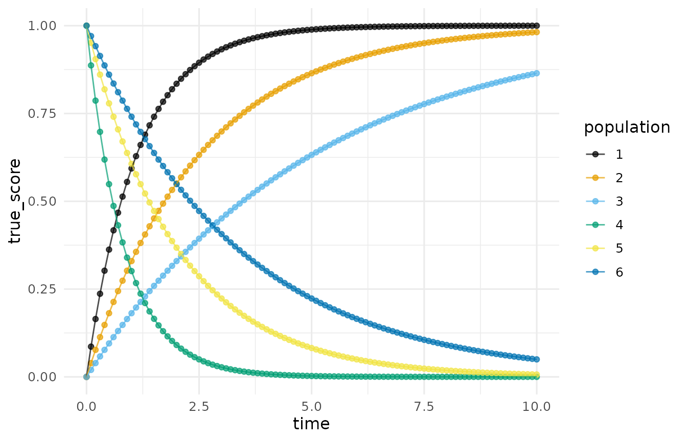
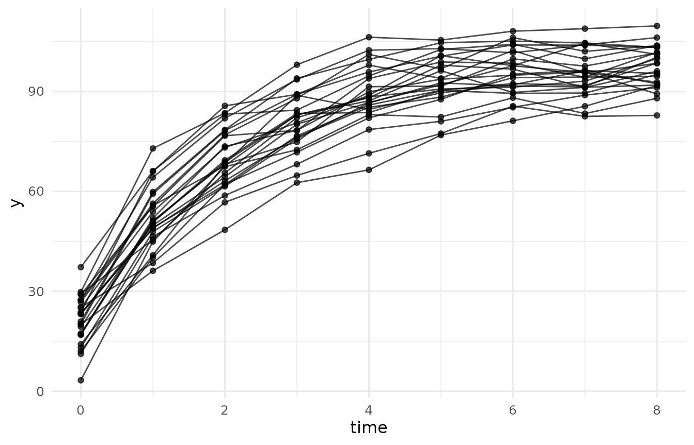
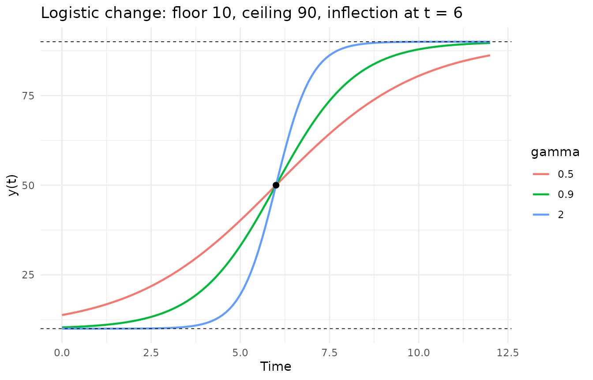
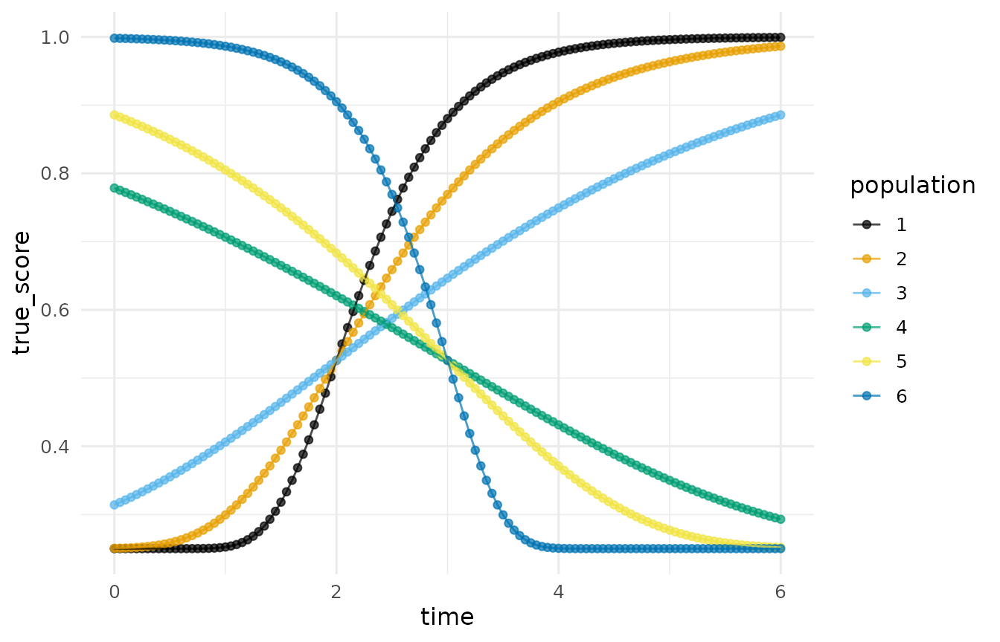
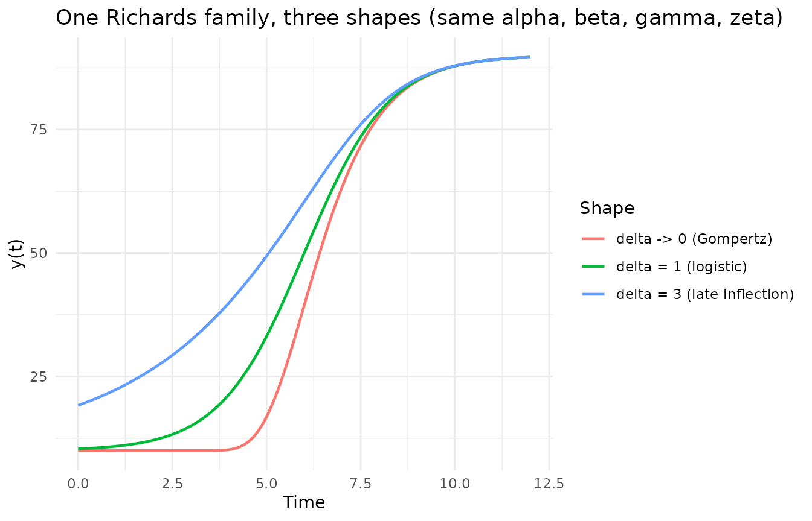
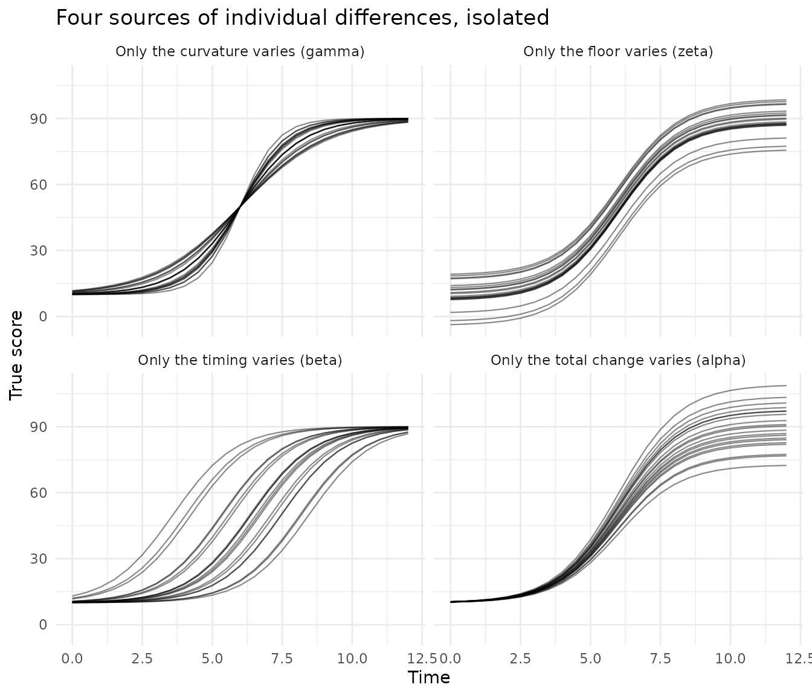
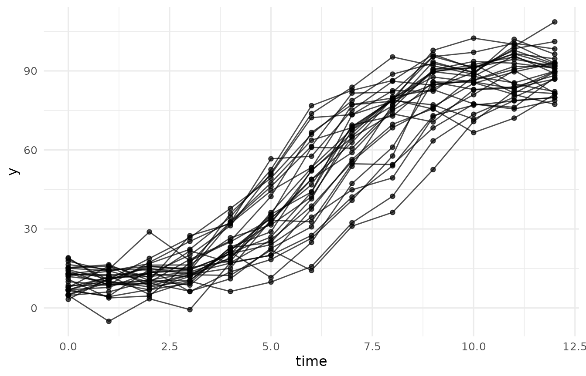
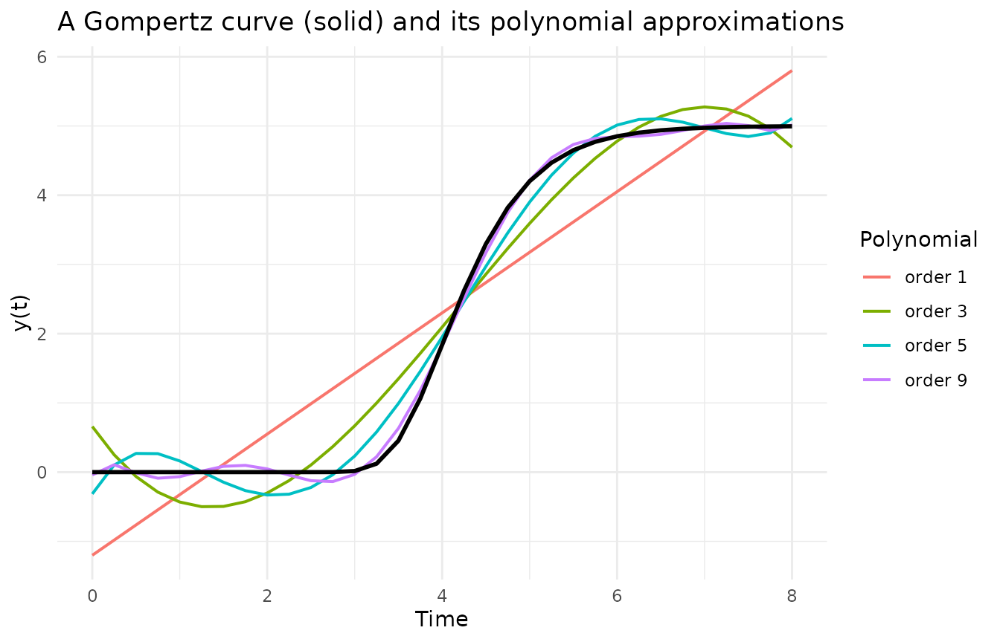
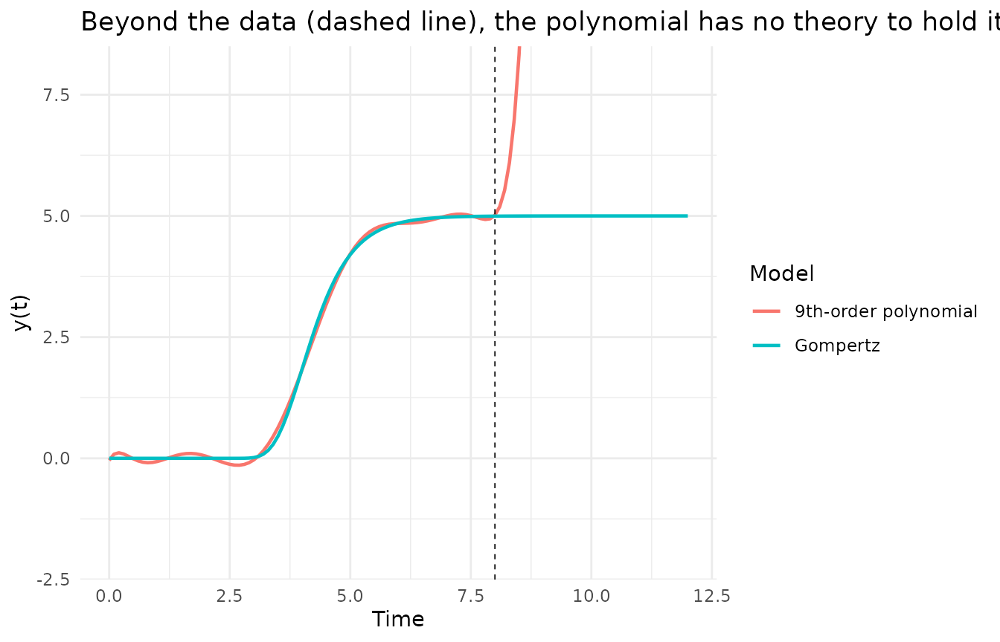

Nonlinear Growth Curves and the Meaning of Their Parameters
Source:vignettes/nonlinear_growth.Rmd
nonlinear_growth.RmdWhen a researcher asks how something changes, the substantive questions are rarely about coefficients. They are about landmarks: where does the process start, where does it end, when is change fastest, and how abruptly does the process turn from gaining to consolidating? Nonlinear growth curves answer those questions directly, because each parameter is one of those landmarks. This vignette walks through the four nonlinear change models whose simulators DMAR provides, shows what each parameter does, and closes with the comparison that motivates the whole enterprise: what happens when S-shaped change is forced through polynomial models instead (Kelley, 2005, 2008).
The four simulators share one interface. Each takes the population
parameters, the between-subject variances of those parameters (so that
individuals follow their own curves), a level-one error specification,
and a measurement schedule, and returns a long-format data frame that
plot_trajectories() and nonlinear mixed-model fitters
consume directly.
The Negative Exponential: Change That Only Decelerates
The simplest nonlinear change model is the negative exponential, also called asymptotic regression (Stevens, 1951):
y(t) = alpha + zeta * exp(-gamma * t).
Three parameters, three answers: alpha is where change
ends (the asymptote), alpha + zeta is where it starts (the
intercept), and gamma is how fast the remaining gap closes.
Change is fastest at the first moment and decelerates ever after; there
is no inflection.
# The six deterministic curves of the illustration in Kelley (2005):
# three growth curves that differ only in curvature, and three decay
# curves that mirror them. Each curve is its own population of size one, so one
# simulator call draws the whole panel.
panel <- simulate_longitudinal_negative_exponential(
n = 1, target_times = seq(0, 10, by = 0.1),
fixed_parameters = list(
c(alpha = 1, zeta = -1, gamma = 0.9),
c(alpha = 1, zeta = -1, gamma = 0.4),
c(alpha = 1, zeta = -1, gamma = 0.2),
c(alpha = 0, zeta = 1, gamma = 1.2),
c(alpha = 0, zeta = 1, gamma = 0.5),
c(alpha = 0, zeta = 1, gamma = 0.3)),
error_variance = 0
)
plot_trajectories(panel, id = "id", time = "time",
outcome = "true_score", group = "population")
The three rising curves share the same start (0) and end (1) and
differ only in gamma; the three falling curves mirror them.
That is the point of a curvature parameter: it moves how fast
without touching from where or to where.
A simulated sample makes the model concrete. Individuals get their own asymptote, total change, and rate; measurements add error:
set.seed(113)
d_ne <- simulate_longitudinal_negative_exponential(
n = 25, target_times = 0:8,
fixed_parameters = c(alpha = 100, zeta = -80, gamma = 0.5),
random_variances = c(alpha = 25, zeta = 16, gamma = 0.01),
error_variance = 9
)
plot_trajectories(d_ne, id = "id", time = "time", outcome = "y")
The Logistic: Symmetric S-Shaped Change
Processes with a floor and a ceiling need a second asymptote. The four parameter logistic (Ratkowsky, 1983; Kelley, 2005) is
y(t) = alpha / (1 + exp(-gamma * (t - beta))) + zeta.
The new landmark is beta, the point of inflection: the
moment of fastest change. For the logistic that moment always comes at
exactly half the total change, alpha / 2 + zeta; the climb
away from the floor mirrors the approach to the ceiling. The fourth
parameter, zeta, is the floor itself, freed from the fixed
zero of the three parameter logistic so the intercept is a modeled
quantity.
tt <- seq(0, 12, by = 0.1)
curves <- do.call(rbind, lapply(c(0.5, 0.9, 2), function(g) {
data.frame(t = tt, gamma = g,
y = 80 / (1 + exp(-g * (tt - 6))) + 10)
}))
curves$gamma <- factor(curves$gamma)
ggplot2::ggplot(curves, ggplot2::aes(t, y, color = gamma)) +
ggplot2::geom_line(linewidth = 0.8) +
ggplot2::geom_hline(yintercept = c(10, 90), linetype = "dashed",
linewidth = 0.3) +
ggplot2::geom_point(data = data.frame(t = 6, y = 50),
ggplot2::aes(t, y), inherit.aes = FALSE, size = 2) +
ggplot2::labs(x = "Time", y = "y(t)",
title = "Logistic change: floor 10, ceiling 90, inflection at t = 6",
color = "gamma") +
ggplot2::theme_minimal()
All three curves pass through the same inflection point (the dot at t
= 6, y = 50): gamma concentrates the change around that
moment without moving it.
The Gompertz: S-Shaped Change That Inflects Early
The Gompertz curve (Winsor, 1932) is also S-shaped, but it is not symmetric:
y(t) = alpha * exp(-exp(-gamma * (t - beta))) + zeta.
Its inflection is pinned at alpha / exp(1) + zeta, about
36.8 percent of the total change. Substantively that is a different
theory of change: rapid early gains, then a long consolidation. Learning
curves often look like this.
panel <- simulate_longitudinal_gompertz(
n = 1, target_times = seq(0, 6, by = 0.05),
fixed_parameters = list(
c(alpha = 0.75, beta = 2, gamma = 1.75, zeta = 0.25),
c(alpha = 0.75, beta = 2, gamma = 1.00, zeta = 0.25),
c(alpha = 0.75, beta = 2, gamma = 0.45, zeta = 0.25),
c(alpha = 0.75, beta = 3, gamma = -0.35, zeta = 0.25),
c(alpha = 0.75, beta = 3, gamma = -0.60, zeta = 0.25),
c(alpha = 0.75, beta = 3, gamma = -2.00, zeta = 0.25)),
error_variance = 0
)
plot_trajectories(panel, id = "id", time = "time",
outcome = "true_score", group = "population")
This reproduces the illustration from Kelley (2005): the three rising
curves share the inflection time beta = 2, the three falling curves
share beta = 3, and because alpha and zeta are
constant, every curve crosses its inflection at the same height, 0.75 /
exp(1) + 0.25, about 0.526.
The Richards Family: The Inflection Becomes a Parameter
Choosing the logistic fixes the inflection at 50 percent of total change; choosing the Gompertz fixes it at 36.8 percent. The Richards curve (Richards, 1959) makes that fraction estimable:
y(t) = alpha / (1 + delta * exp(-gamma * (t - beta)))^(1/delta) + zeta.
The shape parameter delta places the inflection ordinate
at alpha * (1 + delta)^(-1/delta) + zeta. At delta = 1 the Richards
curve is the logistic; as delta approaches 0 it is the
Gompertz; larger delta pushes the inflection past halfway, a shape
neither special case can reach. The Richards family therefore subsumes
the others, which is exactly how Guo, Cheng, and Kelley (2016) used it
to let network structure move the inflection of self-replicating malware
outbreaks.
tt <- seq(0, 12, by = 0.1)
rich <- function(delta) 80 / (1 + delta * exp(-0.9 * (tt - 6)))^(1 / delta) + 10
curves <- rbind(
data.frame(t = tt, y = 80 * exp(-exp(-0.9 * (tt - 6))) + 10,
shape = "delta -> 0 (Gompertz)"),
data.frame(t = tt, y = rich(1), shape = "delta = 1 (logistic)"),
data.frame(t = tt, y = rich(3), shape = "delta = 3 (late inflection)")
)
ggplot2::ggplot(curves, ggplot2::aes(t, y, color = shape)) +
ggplot2::geom_line(linewidth = 0.8) +
ggplot2::labs(x = "Time", y = "y(t)",
title = "One Richards family, three shapes (same alpha, beta, gamma, zeta)",
color = "Shape") +
ggplot2::theme_minimal()
The simulator enforces delta > 0 and, when delta is
given a between-subject variance, refuses draws that cross zero rather
than silently truncating them.
Individual Differences, One Parameter at a Time
Populations do not follow one curve; individuals follow their own.
The simulators model that heterogeneity by drawing each subject’s
parameter vector from a multivariate normal centered at the fixed
effects, with variances (and, optionally, correlations) the researcher
sets. A named entry in random_variances varies a single
parameter and leaves the rest fixed, which turns each source of
individual differences into its own picture. Using the same logistic
population as above (floor 10, ceiling 90, inflection at week 6):
one_at_a_time <- function(which_var, label) {
set.seed(113)
d <- simulate_longitudinal_logistic(
n = 20, target_times = seq(0, 12, by = 0.5),
fixed_parameters = c(alpha = 80, beta = 6, gamma = 0.9, zeta = 10),
random_variances = which_var, error_variance = 0
)
d$panel <- label
d
}
d_all <- rbind(
one_at_a_time(c(zeta = 25), "Only the floor varies (zeta)"),
one_at_a_time(c(alpha = 100), "Only the total change varies (alpha)"),
one_at_a_time(c(beta = 1.5), "Only the timing varies (beta)"),
one_at_a_time(c(gamma = 0.06), "Only the curvature varies (gamma)")
)
ggplot2::ggplot(d_all,
ggplot2::aes(time, true_score, group = id)) +
ggplot2::geom_line(alpha = 0.45, linewidth = 0.4) +
ggplot2::facet_wrap(~ panel, ncol = 2) +
ggplot2::labs(x = "Time", y = "True score",
title = "Four sources of individual differences, isolated") +
ggplot2::theme_minimal()
Each panel is a different substantive claim. Floors that vary mean children start in different places; total change that varies means they gain different amounts; timing that varies means the same growth happens on different schedules; curvature that varies means some change abruptly and others gradually. A real population mixes all four, which is one line:
set.seed(113)
d_mix <- simulate_longitudinal_logistic(
n = 30, target_times = 0:12,
fixed_parameters = c(alpha = 80, beta = 6, gamma = 0.9, zeta = 10),
random_variances = c(alpha = 36, beta = 1, gamma = 0.01, zeta = 9),
error_variance = 16
)
plot_trajectories(d_mix, id = "id", time = "time", outcome = "y")
Nonlinear Versus Polynomial: Why the Parameters Matter
Any smooth curve can be approximated by a polynomial of high enough order, so why not stay with linear models? Two reasons, both visible in one picture. Take the deterministic Gompertz curve used in Kelley (2005), y(t) = 5 exp(-exp(7 - 1.75 t)), observe it on t = 0 to 8, and fit polynomials of increasing order:
t_obs <- seq(0, 8, by = 0.25)
y_obs <- 5 * exp(-exp(7 - 1.75 * t_obs))
fits <- do.call(rbind, lapply(c(1, 3, 5, 9), function(p) {
data.frame(t = t_obs, order = paste0("order ", p),
y = fitted(lm(y_obs ~ poly(t_obs, p))))
}))
truth <- data.frame(t = t_obs, y = y_obs)
ggplot2::ggplot(fits, ggplot2::aes(t, y, color = order)) +
ggplot2::geom_line(linewidth = 0.7) +
ggplot2::geom_line(data = truth, ggplot2::aes(t, y),
inherit.aes = FALSE, linewidth = 1) +
ggplot2::labs(x = "Time", y = "y(t)",
title = "A Gompertz curve (solid) and its polynomial approximations",
color = "Polynomial") +
ggplot2::theme_minimal()
The ninth-order polynomial tracks the curve well. But it needed ten parameters to do what the Gompertz does with four, and not one of the ten answers a substantive question: no coefficient is the ceiling, none is the moment of fastest growth. The Gompertz parameters are the theory; the polynomial coefficients are bookkeeping.
The second reason appears the moment the model leaves the data. Refit the best polynomial on the observed window, then extend the time axis:
fit9 <- lm(y_obs ~ poly(t_obs, 9, raw = TRUE))
t_new <- seq(0, 12, by = 0.1)
pred <- data.frame(
t = t_new,
polynomial = predict(fit9, newdata = data.frame(t_obs = t_new)),
gompertz = 5 * exp(-exp(7 - 1.75 * t_new))
)
long <- rbind(
data.frame(t = pred$t, y = pred$polynomial, model = "9th-order polynomial"),
data.frame(t = pred$t, y = pred$gompertz, model = "Gompertz")
)
ggplot2::ggplot(long, ggplot2::aes(t, y, color = model)) +
ggplot2::geom_line(linewidth = 0.8) +
ggplot2::geom_vline(xintercept = 8, linetype = "dashed",
linewidth = 0.3) +
ggplot2::coord_cartesian(ylim = c(-2, 8)) +
ggplot2::labs(x = "Time", y = "y(t)",
title = "Beyond the data (dashed line), the polynomial has no theory to hold it",
color = "Model") +
ggplot2::theme_minimal()
Inside the observed window the two are indistinguishable; past it, the polynomial rockets out the top of the figure while the Gompertz does what growth to an asymptote must do. A nonlinear model extrapolates its theory; a polynomial extrapolates its arithmetic.
From Curves to Data and Back
The simulators exist so that designs, estimators, and analysis plans
for nonlinear change can be studied before data collection, and
analysis_of_change() closes the loop: simulate a Gompertz
sample with individual variation, then recover both the population curve
and the spread of its parameters, one fitted curve per unit.
set.seed(113)
d <- simulate_longitudinal_gompertz(
n = 60, target_times = 0:10,
fixed_parameters = c(alpha = 75, beta = 3, gamma = 0.55, zeta = 10),
random_variances = c(alpha = 25, beta = 0.4, gamma = 0.005, zeta = 4),
error_variance = 9
)
analysis_of_change(d, id = "id", time = "time", outcome = "y",
model = "gompertz")| term | estimate | se | sd_units | var_units |
|---|---|---|---|---|
| alpha | 76.8 | 1.02 | 7.92 | 62.7 |
| beta | 2.84 | 0.0939 | 0.727 | 0.529 |
| gamma | 0.55 | 0.016 | 0.124 | 0.0154 |
| zeta | 9.29 | 0.735 | 5.7 | 32.4 |
The estimate column lands near the generating values
(75, 3, 0.55, 10), and sd_units reports the individual
differences in each landmark. The two-stage spread carries each curve’s
estimation noise on top of the true heterogeneity;
method = "mixed" fits the proper random-coefficients model
(through nlme::nlme() here, or lme4::lmer()
for the polynomial) and returns the variance components instead.
Every row reports a quantity a reader can care about: the total change, the day change peaked, how concentrated the change was, and the floor it started from. A fuller treatment of these models in heterogeneous populations, where class membership itself may be unknown, is in Kelley (2005, 2008).
References
Guo, H., Cheng, H. K., & Kelley, K. (2016). Impact of network structure on malware propagation: A growth curve perspective. Journal of Management Information Systems, 33(1), 296–325.
Kelley, K. (2005). Estimating nonlinear change models in heterogeneous populations when class membership is unknown: Defining and developing the latent classification differential change model (Doctoral dissertation). University of Notre Dame.
Kelley, K. (2008). Nonlinear change models in populations with unobserved heterogeneity. Methodology, 4(3), 97–112.
Ratkowsky, D. A. (1983). Nonlinear regression modeling: A unified practical approach. Marcel Dekker.
Richards, F. J. (1959). A flexible growth function for empirical use. Journal of Experimental Botany, 10(2), 290–301.
Stevens, W. L. (1951). Asymptotic regression. Biometrics, 7(3), 247–267.
Winsor, C. P. (1932). The Gompertz curve as a growth curve. Proceedings of the National Academy of Sciences, 18(1), 1–8.
sessionInfo()
#> R version 4.6.1 (2026-06-24)
#> Platform: x86_64-pc-linux-gnu
#> Running under: Ubuntu 24.04.4 LTS
#>
#> Matrix products: default
#> BLAS: /usr/lib/x86_64-linux-gnu/openblas-pthread/libblas.so.3
#> LAPACK: /usr/lib/x86_64-linux-gnu/openblas-pthread/libopenblasp-r0.3.26.so; LAPACK version 3.12.0
#>
#> locale:
#> [1] LC_CTYPE=C.UTF-8 LC_NUMERIC=C LC_TIME=C.UTF-8
#> [4] LC_COLLATE=C.UTF-8 LC_MONETARY=C.UTF-8 LC_MESSAGES=C.UTF-8
#> [7] LC_PAPER=C.UTF-8 LC_NAME=C LC_ADDRESS=C
#> [10] LC_TELEPHONE=C LC_MEASUREMENT=C.UTF-8 LC_IDENTIFICATION=C
#>
#> time zone: UTC
#> tzcode source: system (glibc)
#>
#> attached base packages:
#> [1] stats graphics grDevices utils datasets methods base
#>
#> other attached packages:
#> [1] DMAR_1.0.0
#>
#> loaded via a namespace (and not attached):
#> [1] gtable_0.3.6 jsonlite_2.0.0 dplyr_1.2.1 compiler_4.6.1
#> [5] tidyselect_1.2.1 jquerylib_0.1.4 systemfonts_1.3.2 scales_1.4.0
#> [9] textshaping_1.0.5 yaml_2.3.12 fastmap_1.2.0 ggplot2_4.0.3
#> [13] R6_2.6.1 labeling_0.4.3 generics_0.1.4 knitr_1.51
#> [17] MASS_7.3-65 tibble_3.3.1 desc_1.4.3 bslib_0.12.0
#> [21] pillar_1.11.1 RColorBrewer_1.1-3 rlang_1.3.0 cachem_1.1.0
#> [25] xfun_0.60 fs_2.1.0 sass_0.4.10 S7_0.2.2
#> [29] otel_0.2.0 cli_3.6.6 pkgdown_2.2.1 withr_3.0.3
#> [33] magrittr_2.0.5 digest_0.6.39 grid_4.6.1 lifecycle_1.0.5
#> [37] vctrs_0.7.3 evaluate_1.0.5 glue_1.8.1 farver_2.1.2
#> [41] ragg_1.5.2 rmarkdown_2.31 tools_4.6.1 pkgconfig_2.0.3
#> [45] htmltools_0.5.9